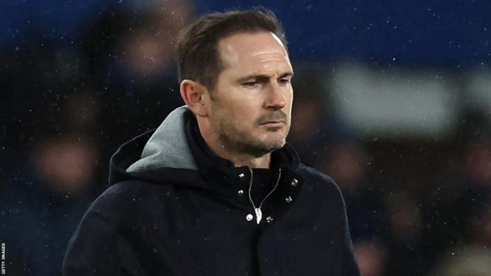

Nigeria:Breaking: Osun Tribunal sacks Adeleke, declares Oyetola Governor
The Osun State Governorship Election Petitition Tribunal has voided the election of Governor Ademola Adeleke and declared
Gboyega Oyetola as the winner of the election.
The tribunal, on Friday in Osogbo annulled the result declared by the electoral comission (INEC), which gave victory in the 16 June 2022 election to Mr Adeleke of the People'sn Democratic Party(PDP).
The panel led by Justice Terste Kume directed that the certificate of return should instead be issued to Mr Oyetola of the All Progressive Congress(APC).
Justice Kurme held that the governorship election was not held in compliance with Nigeria's Electoral Act.
The tribunal held that the governorship election was characterized by over-voting.It said after deducting the excessive votes, the figure Mr Oyetola polled at the election was 314,921.
The tribunal thus ordered that Mr Oyetola should be returned as governor of Osun State.
Mr Adeleke is expected to appeal the ruling of the tribunal and will remain in office pending the final determination of the matter by superior courts.
Nigeria:CBN launches Domestic Card AfriGo, bans dollar charges on domestic transactions
The Central Bank of Nigeria(CBN) has launched the Nigerian National Domestic Card Scheme, AfriGo, aimed at creating a more robustpayment system that would drive financial inclusion in the country. Launching the card virtually, thus morning, the Governor of the Central Bank of Nigerias, Mr Godwin Emefiele, said that transaction charges on all cards would henceforth be paid in Naira, except for international transactions.
According to him, AfriGo would be cheaper and would be a matter of national pride to boost financial inclusion.

Sports:EPL:'I'm dissapointed', Lampard breaks silence after sack as Everton boss
Chelsea legend, Frank Lampard has broken his silence after he was shown the exit door as Everton Manager on Monady.
The Toffees are 19th in the table after 20 games. They have never been relegated from the Premier League, and may find themselves in the Championship next season.
The Toffees were also sinking last season before Lampard was appointed on a rescue mission which he achieved having taken over from Rafael Benitez.
The 44 year old has now issued a statement following his sack, saying:"Coming into Everton last season I knew we were in a tough moment."
The Englishman said he will always be proud of the inccredible work and support he got from everyone involved with th team..
He thanked everyone, adding that "I will never forget the incredible night against palace that we shared."
"I'm disappointed that we couldn't achieve more together and wish all the playerss and everyone at Everton FC the very best for the future."